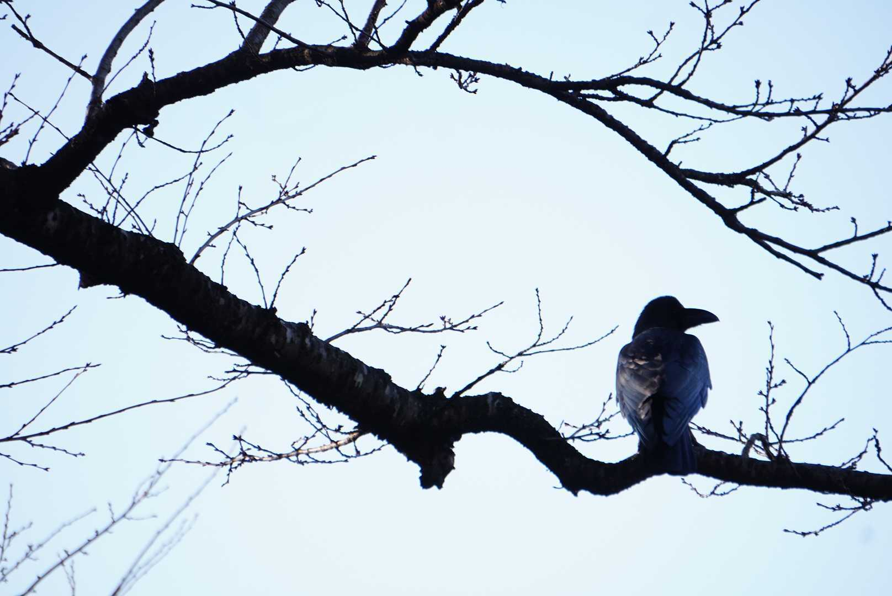

初めまして！情報システム科１年２組の髙橋耀摩です。年齢は２３歳！！はーい、そうです、、途中でドロップアウトしてきた訳あり学生ですね。 まあ。そんなことはさておいて私がどういう人間なのかご紹介します！基本的な性格は、いろんなことしてみたいとう願望があり、瞬発力がありますが持続することがなかなかないハマりやすく飽きっぽい性格をしています。ちなみに、前職は海上自衛隊に所属してました。

初めまして！情報システム科１年２組の髙橋耀摩です。年齢は２３歳！！はーい、そうです、、途中でドロップアウトしてきた訳あり学生ですね。 まあ。そんなことはさておいて私がどういう人間なのかご紹介します！基本的な性格は、いろんなことしてみたいとう願望があり、瞬発力がありますが持続することがなかなかないハマりやすく飽きっぽい性格をしています。ちなみに、前職は海上自衛隊に所属してました。
趣味は写真撮影です。主に風景写真を撮影しています。毎週土曜日は天気が晴れている状態なら、三脚と望遠レンズとカメラを持参して出かけにいってます。 また、星空がきれいに見える夜なら、曜日関係なく自宅にて星空撮影をします。今は、風景写真をメインに撮影していますが機材がそろったら人物撮影（ポートレート）に挑戦していきたいです。 このページに載せている写真は私が実際に撮影した写真になります。